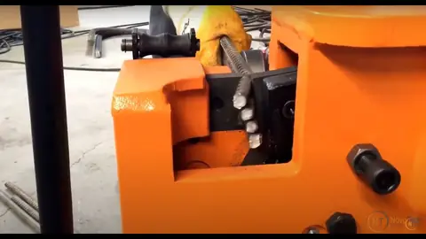
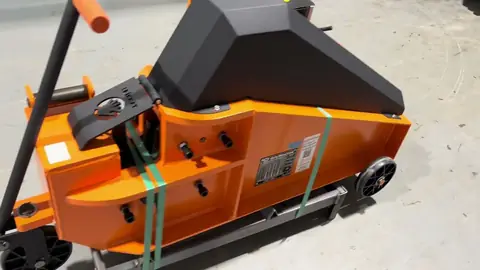
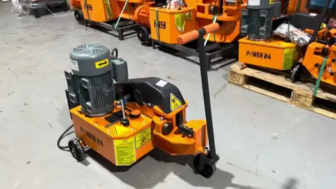
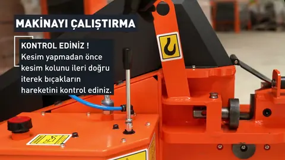

H series hydraulic rebar cutters and POWER 24 portable cutter
H 26 · H 36S · H 38S · H 45S · H 55 · POWER 24


Single-acting hydraulic cutters with spring return and wheels — the standard rebar cutter for construction sites and small shops. The portable POWER 24 runs on 110/220 V single-phase and the H series run on 600 V 3-phase.
- Hydraulic system with adjustable blade stopper; cuts in low pressure
- Silent, safe and environmentally friendly; low power consumption
- Joystick-type hydraulic valve needs little maintenance and has a long service life
- Reinforced steel body; easy transport on cast-iron wheels
- POWER 24: 198 lb (90 kg) portable cutter with transformer for 110 / 220 V single-phase
- 600 V 3-phase (H series) with CSA-approved electrical panel

GMS hydraulic rebar cutters

GMS H 45 hydraulic rebar cutter — Ø1-3/4″ (45 mm)

GMS POWER 24 portable rebar cutter on 120 V

GMS H series hydraulic cutter — operating instructions
| Model | H 26 | H 36S | H 38S | H 45S | H 55 | POWER 24 |
|---|---|---|---|---|---|---|
| Cutting capacity · 45 kg/mm² steel≈ 64,000 psi tensile | Ø1″ (26 mm) × 125M / #8 Ø5/8″ (16 mm) × 2 | Ø1-1/8″ (30 mm) × 130M / #9 Ø7/8″ (22 mm) × 2 | Ø1-1/2″ (38 mm) × 135M / #11 Ø1″ (26 mm) × 2 | Ø1-3/4″ (45 mm) × 145M / #14 Ø1-3/8″ (36 mm) × 2 | Ø2-1/8″ (55 mm) × 145M / #14 Ø1-1/4″ (32 mm) × 2 | Ø15/16″ (24 mm) × 120M / #7 Ø9/16″ (14 mm) × 2 |
| Cutting capacity · 65 kg/mm² steel≈ 92,500 psi tensile | Ø7/8″ (22 mm) × 120M / #6 Ø1/2″ (12 mm) × 2 | Ø1″ (26 mm) × 125M / #8 Ø11/16″ (18 mm) × 2 | Ø1-3/8″ (36 mm) × 135M / #11 Ø7/8″ (22 mm) × 2 | Ø1-5/8″ (42 mm) × 135M / #11 Ø1-1/8″ (30 mm) × 2 | Ø2″ (52 mm) × 145M / #14 Ø1-1/8″ (28 mm) × 2 | Ø13/16″ (20 mm) × 120M / #6 Ø3/8″ (10 mm) × 3 |
| Cutting capacity · 85 kg/mm² steel≈ 120,900 psi tensile | Ø13/16″ (20 mm) × 120M / #6 Ø3/8″ (10 mm) × 2 | Ø7/8″ (22 mm) × 120M / #6 Ø5/8″ (16 mm) × 2 | Ø1-1/4″ (32 mm) × 130M / #9 Ø13/16″ (20 mm) × 2 | Ø1-3/8″ (34 mm) × 130M / #10 Ø1″ (26 mm) × 2 | Ø1-5/8″ (42 mm) × 135M / #11 Ø1″ (26 mm) × 2 | Ø5/8″ (16 mm) × 115M / #5 Ø5/16″ (8 mm) × 4 |
| Motor power | 3 HP (2.2 kW) | 3 HP (2.2 kW) | 4 HP (3 kW) | 5.4 HP (4 kW) | 10 HP (7.5 kW) | 3 HP (2.2 kW) |
| Hydraulic oil tank | 7 L | 13 L | 17.5 L | 17.5 L | 35 L | 7 L |
| Weight | 265 lb (120 kg) | 364 lb (165 kg) | 602 lb (273 kg) | 708 lb (321 kg) | 1,063 lb (482 kg) | 198 lb (90 kg) |
| Dimensions W × L × H | 21 × 39 × 31 in (54 × 100 × 78 cm) | 21 × 41 × 31 in (53 × 105 × 80 cm) | 24 × 48 × 31 in (61 × 123 × 80 cm) | 26 × 54 × 31 in (65 × 136 × 79 cm) | 30 × 61 × 40 in (75 × 154 × 102 cm) | 21 × 31 × 29 in (53 × 79 × 73 cm) |
| Voltage | 600 V 3-phase (208/240/480 V on request) | 600 V 3-phase (208/240/480 V on request) | 600 V 3-phase (208/240/480 V on request) | 600 V 3-phase (208/240/480 V on request) | 600 V 3-phase (208/240/480 V on request) | 110 / 220 V 1-ph |
Single-bar capacity shows the largest Canadian metric bar / US bar number that fits. Dimensions are overall W × L × H. Three-phase machines are supplied for 600 V; 208 V, 240 V or 480 V 3-phase available on request.